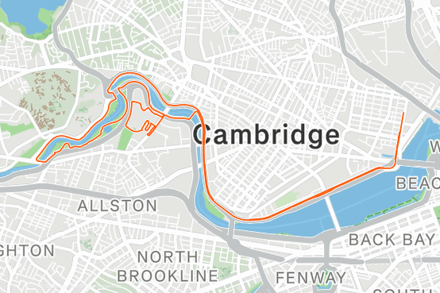
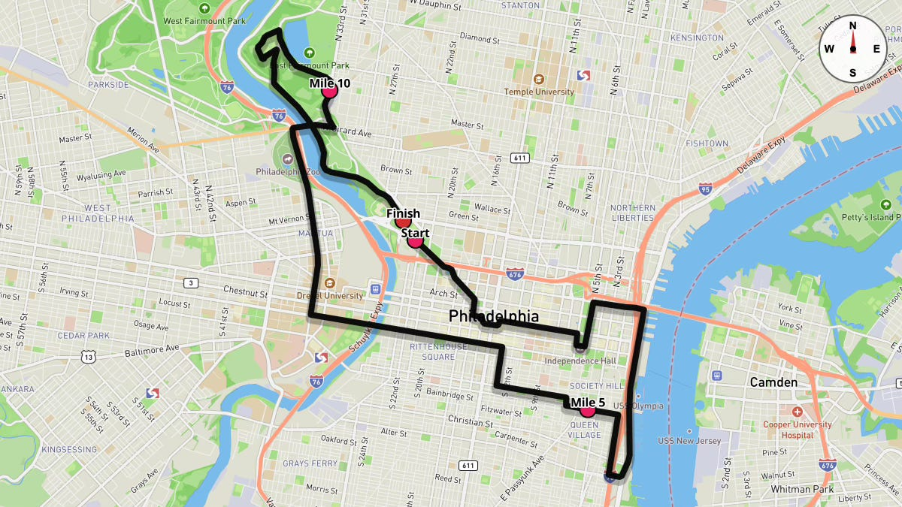
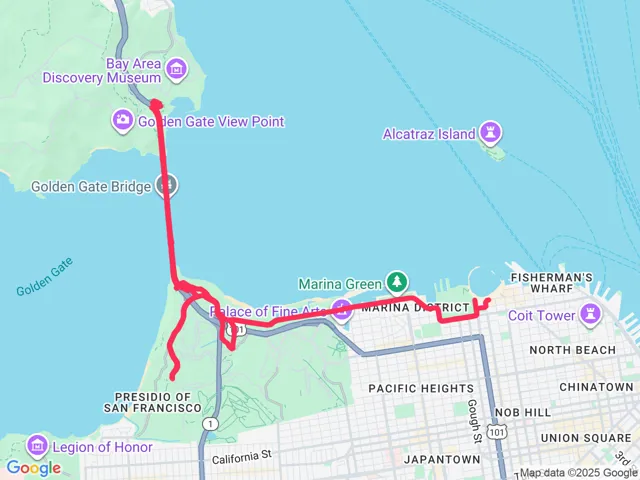
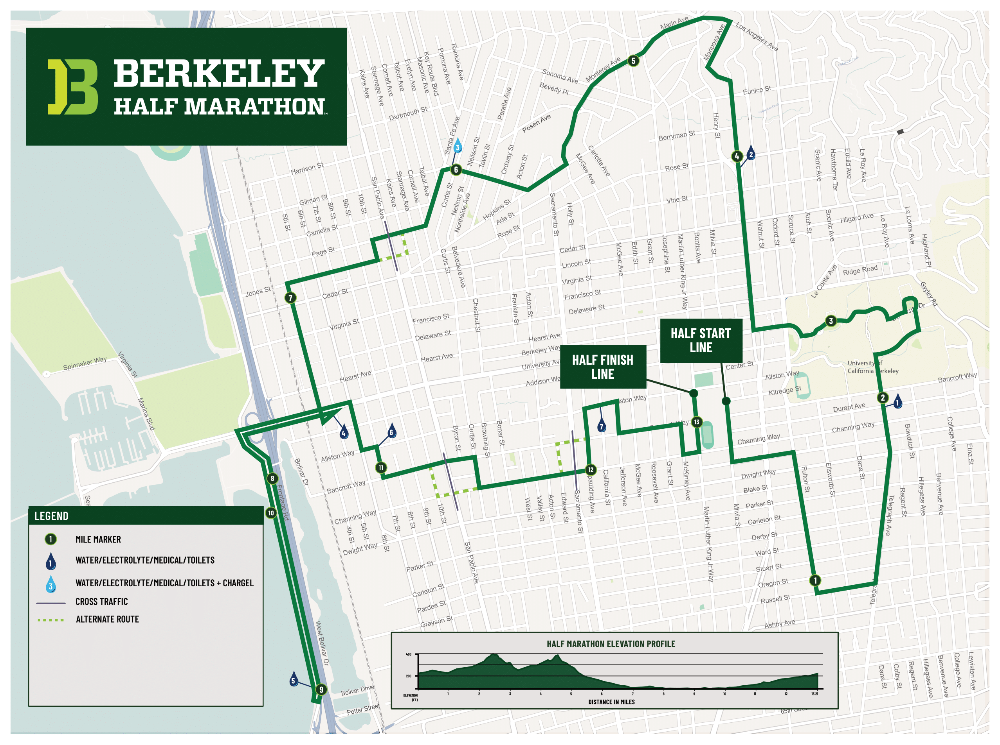
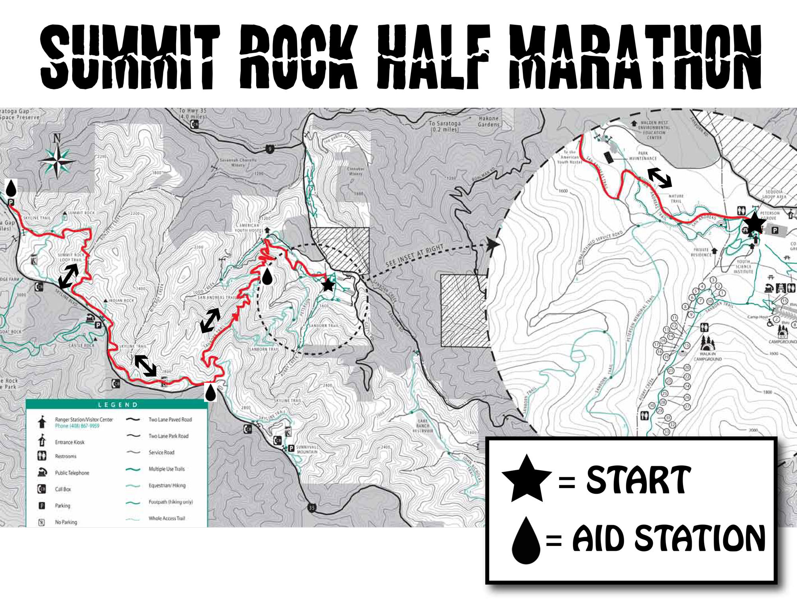
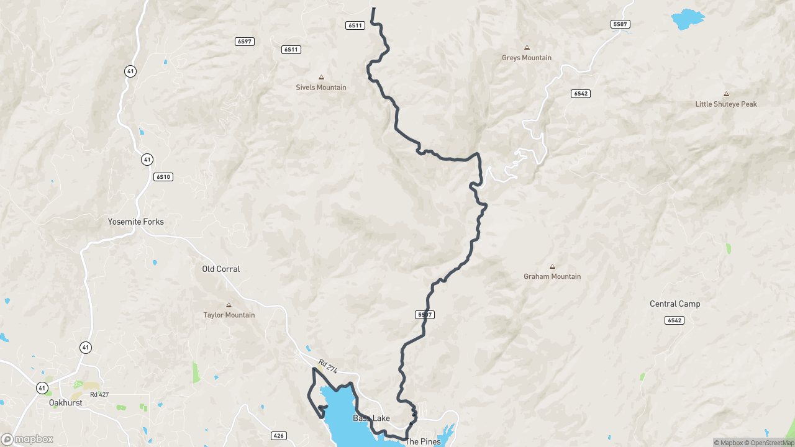
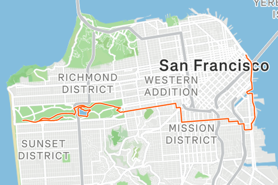

abby dulski
abby dulskiPost college rowing, I needed a new way to participate in sport. I found running a fun way to do that. I love participating in races because the community is always so fun at these. Here are all the races I've participated in and my takes on them.
july 29, 2026
running
all the running races I've done!


01
Cambridge Half Marathon
The Cambridge half is absolutely one of the best halfs to start with. It is extremely flat, you get to run on the Charles River almost the entire time, and even do a loop around the Harvard stadium. It is flooded with college students both watching and cheering, so there is a lot of excitment throughout the entire race even though it isn't a major city.


02
Philadelphia Half Marathon
This race was so fun. Ran with a friend living in the Philly area. It is right around Thanksgiving, so fun to do with family + friends traveling. No qualifications to enter the half or full, but feels like a big city race (NY, Chicago, Boston, etc.), so a great replacement for those where qualifying is impossible.


03
Providence Marathon
This was by far my roughest race I've ever done. My first and only marathon that ended in multiple stress fractures. To this day I can't fully describe how that happened. I had done 20 mile runs in training and felt prepared, but everything went wrong on race day. I did wear newer shows, which was definitely a big part of the cause. Additionally, the race itself is quite small and they did not close the roads for the majority of the course, so you are just running on the side of some busy roads. It was also very hot and humid during the race. Wouldn't reccommend for a first marathon with the lack of support along the course.


04
Golden Gate Half Marathon
This race was a blast. You do an out and back along the bridge, so if you have friends running you can see them. Not nearly as crowded as the SF half, but enough people where the community was strong during the race. They don't close the bridge, so it was a bit crowded on the bridge sidewalk at times, but not unmaneagable.


05
Berkeley Half Marathon
This race was pretty random, but still a great time. The course takes you through UC Berkeley and along the water, which is awesome. I started at the same time as the wheelchair division, which did cause some collisions on the downhill that happens right away in UC Berkely's campus, so that is my only thing to watch out for. The finish of this race was a blast ending at a big park right near a ton of yummy cafes. This is a great race for spectating as well, as a lot of it weaves through very walkable neighborhoods.


06
Brazen Racing Summit Rock
My first trail race. It was a ton of fun and people were very friendly. Ended up running with some folks for a lot of the way. The course was hilly, with the biggest ascent being at the very beginning (probably the first 3 miles were straight uphill). Surprisingly, the downhill of that ended up being the hardest part, though, as I had trouble moving fast without hurting my knees or back. Would definitely recommend getting trail shoes. I ran in my normal hokas and it was fine, but the downhills likely would have been better with trail shoes.


07
Yosemite Half Marathon
The vacation race series seem like an absolute blast if they are all like this race. Lots of people from all over and lots of organized fun before and after the race. This course in particular was extremely downhill and ended on a beautiful lake where we were able to rent jet skis and swim post race. The only thing to note is the shuttle up to the start is a 45 minute bus ride up a very curvy road. This left me feeling pretty sick at the top and I had to take a few minutes before starting the race. Additionally, because everyone in the race has to take the shuttle, prepare to wait ~1 hour in line for the shuttle.


08
SF Marathon — 2nd Half
This might be my favorite race to date. Over 30,000 runners across all the races. There wasn't a moment where people weren't cheering and the scenery was very diverse keeping it interesting. For an SF race, it wasn't as hilly as I thought it was going to be. Just a few gradual hills near the middle and end. The only downside was it was a bit cramped running throught the park with all of the different races. The second half doesn't start until 8:30am though, which is a huge perk.